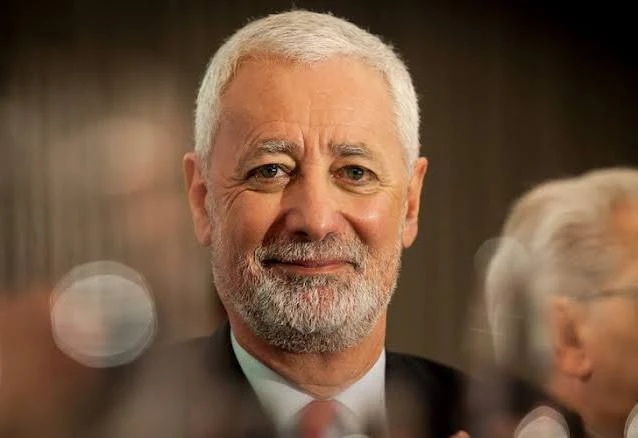

01
Transformar
Substituir o modelo do século XIX por ecologias de aprendizagem diversificadas.

António Manuel Seixas Sampaio da Nóvoa é uma das figuras mais proeminentes do pensamento educativo contemporâneo. Com um percurso marcado pela excelência académica em instituições de elite mundial, o seu trabalho foca-se na reconstrução do papel do professor e na defesa da escola como património da humanidade.
O seu contributo não se limita à teoria; como Reitor Honorário da Universidade de Lisboa e Embaixador de Portugal junto da UNESCO, Nóvoa tem liderado debates globais sobre os novos contratos sociais para a educação.
"Para libertar o futuro da humanidade, precisamos primeiro libertar o futuro dos professores."
Substituir o modelo do século XIX por ecologias de aprendizagem diversificadas.
Consolidar o conhecimento profissional através da partilha e da cultura colaborativa.
Garantir a escola como um lugar de convivência e bem comum.